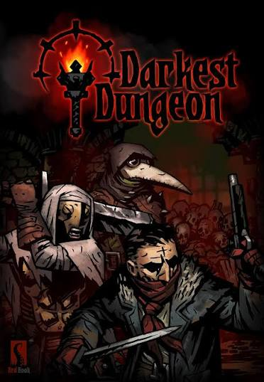
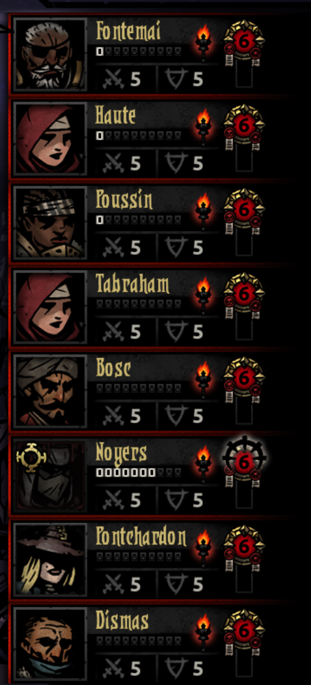
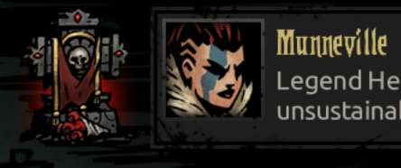

The most Darkest Ice Cream in the world!
Is the Darkest Ice Cream OMG!
It's made with Nutella (that's why it's dark, duh), but not regular chocolate, because I don't like that.
The cone and the ice cream look like an oddly shaped yin and yang.
This page is based in the game Darkest Dungeon (It doesn't look like it, does it?)
What is Darkest Dungeon about?

The game
It's so hard, and it's a RPG game with turn-based combat.
In this game you enter into a dungeon a search loot
for your hamlet using slav- I mean heroes.
Poor people who go to your hamlet seeking refuge,
only to end up being recruited by you for your own survival.

Your roster
As I mentioned earlier, you have a set number of heroes;
Cementery
And as I said before,
your heroes can die! To make their deaths hurt even more,
the game includes a graveyard where you can remember
them and see the absurd (or heroic) ways they met their end :D.
This is Munneville,
one of my most important heroes at that stage of the game;
she died of a heart attack (Overconfidence is a slow and insidious killer).
Did her death hurt? Yes, but then again, I had already beaten the game,
so I was able to get more heroes to replace her :(